| 日付 | 2013年9月5日（木） - 2013年9月7日（土） | ||
|---|---|---|---|
| 山域 | 那須 | ||
| メンバー | 家族（妻、長女・2歳、長男・0歳） | ||
| 山行形態 | 子連れ2泊3日コテージ泊 | ||
| アクセス | 車 | ||
| ルート (Map) |
|
夏休みは、どこか天気の良い日を選んで那須へキャンプに行く予定をたてていた。
しかし、週の前半は台風と秋雨前線の影響で、関東南部を除いてはずっと雨予報…
週の後半にかけていたが、全く天気が回復する兆しを見せず、雨予報が出続けている。
一週間も悪天候が続くのは梅雨の時期でもなかなかない。
もっとも夏休みの計画を立てると悪天予報が出るのは毎年のことなのだが…
もともと3泊4日の予定だったが、水曜が全国的な雨予報だったため
木～土の2泊3日に変更して、重い気持ちで那須に向かう。
1日目
直前になって天気予報が変わり、本日は大雨。
外に出ることができないため、まずはお菓子の城 那須ハートランドに行ってみることにする。
ここではお菓子の製造工程の見学を行うことができる。
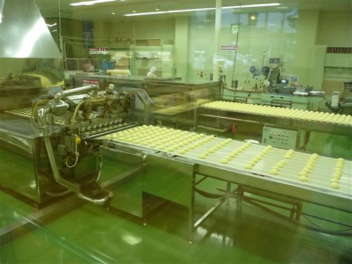
工場見学はどちらかというとおまけで、基本的には土産物屋が中心だ。
試食をしながらいろいろと物色する。
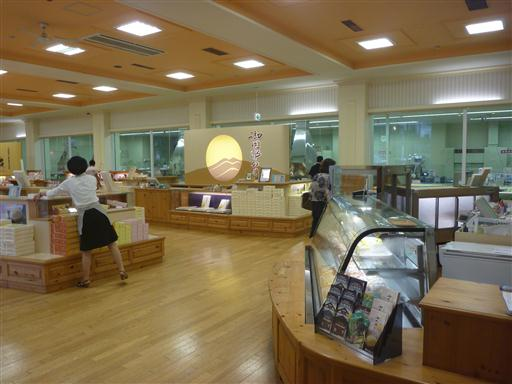
娘はブドウのキーホルダーが気に入ったようで、ずっと触っている。
物欲がないため「これ欲しい」とは決して言わないので楽だ。
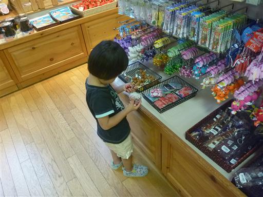
昼食はうどん匠人 岡本でうどんを食べることにする。うどん、デザートともに非常においしかった。
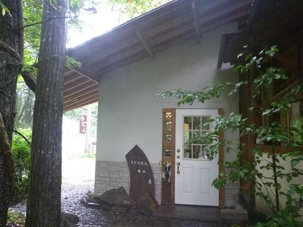
昼食後は雨が小降りになってきたので南ヶ丘牧場に行ってみる。
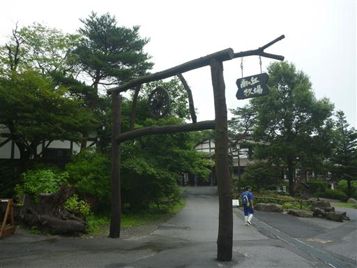
観光客はあまり多くなく、少し寂れた雰囲気だ。
晴れていれば、いろいろと楽しめるのかもしれないが…
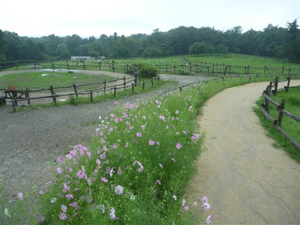
ロバを見学。
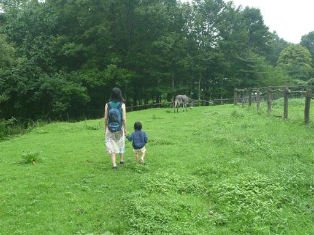
こちらは馬。エサを転がして馬にあげることができる。
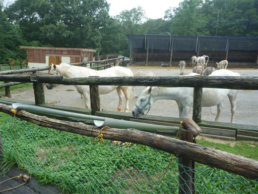
ヤギが破れたフェンスから頭を出している。お気に入りの場所なのだろう。
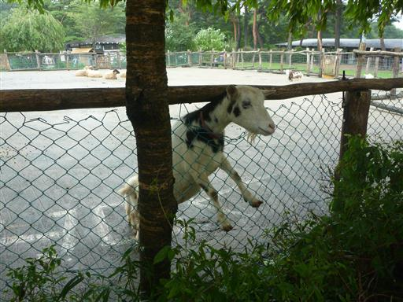
途中で雨が激しくなってきたので売店に逃げ込む。
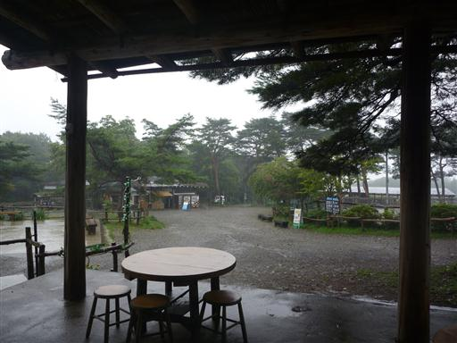
中は木でできたイスとテーブルが並んでいる。
ソフトクリームを食べながら雨が止むのを待ったが、止む気配がないため、
牧場を後にすることにする。
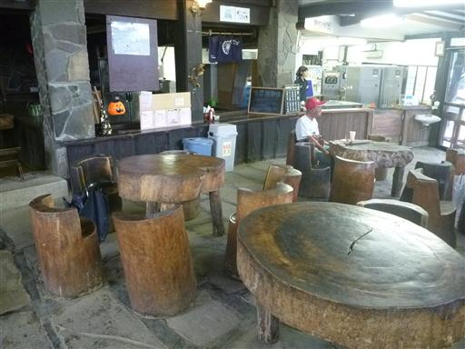
次なる目的地はSLランド。入場料は一人1000円。
高いと思ったが、とりあえず入ってみる。
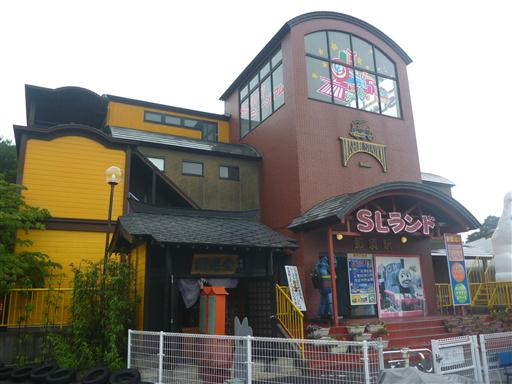
入ってまず目を引くのが鉄道模型のジオラマ。1時間に1回、電車を動かすようだ。
1000円も払っているのだから、常時動かしてくれればよいものを…
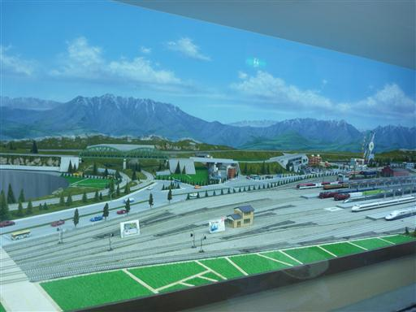
次の運転まで45分程度あるので、2～3階を先に見学することにする。
階段には謎の注意書きがある。確かにここの階段は少し登りにくい。
ユーモアある注意書きにしたかったのだろうけど、全く笑えないのだが…
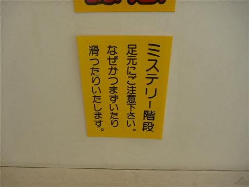
2階には謎の展示物が多数ある。
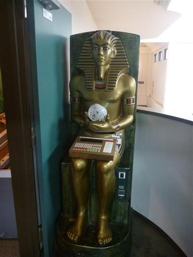
ライトの隙間には手の骨が落ちている。怖すぎるんですが…
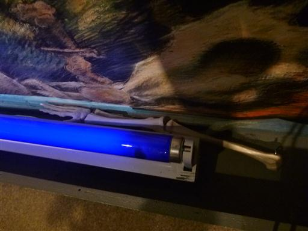
ほとんどの展示物はSLと関係のないものなのだが、一応電車の形の乗り物もある。
そして、これらのことごとくがコインを入れないと動かないというありさま。
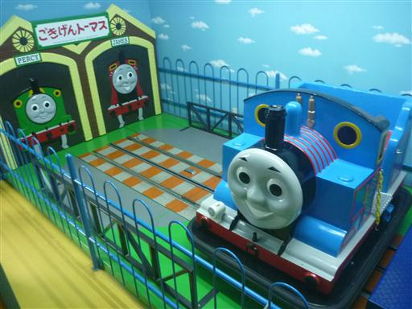
一通り2～3階を見学したら1階に戻ってくる。ちょうど運転ショーの時間だ。
色々な電車が動き出し、途中で夜になったりしたので、これはなかなかきれいだった。
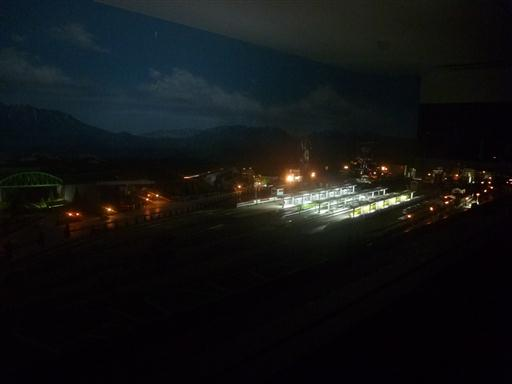
運転ショーが終わると建物の外へ。出口への通路には壺と仏像が並んでいる。
謎すぎる…
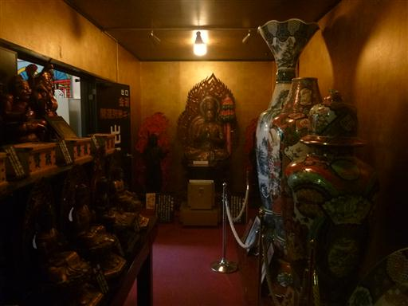
外は電車の車両が並んでいる。電車の中は空っぽで何の工夫もないのだが、
ここは娘が気に入ったようで乗ったり降りたりを繰り返していた。
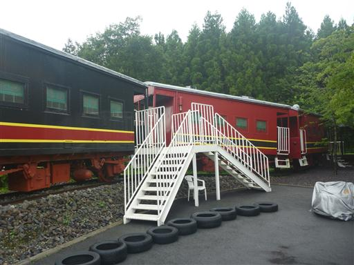
那須観光が終わったら、メープル那須高原キャンプグランドに移動。
キャンプ場に続く道は未舗装でなかなかの悪路だった。
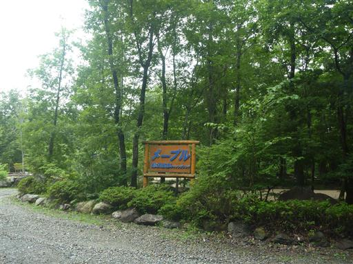
今回の宿泊先はKTキャビン4だ。車を隣に停められるのがありがたい。

中は2段ベッドになっている。少々狭いがガスコンロやシンクなど最低限の設備は整っている。
夕食をとったら持参した寝袋で就寝。疲れていたためすぐに眠ってしまった。
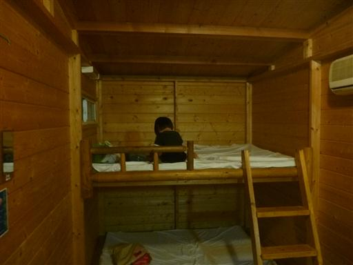